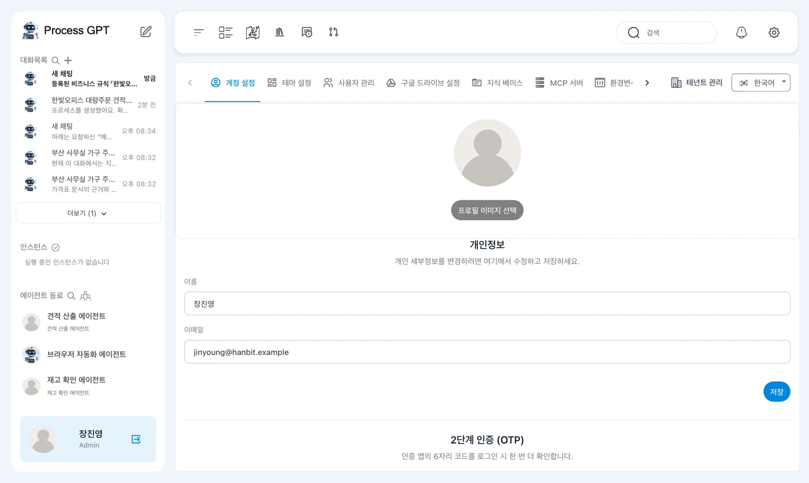
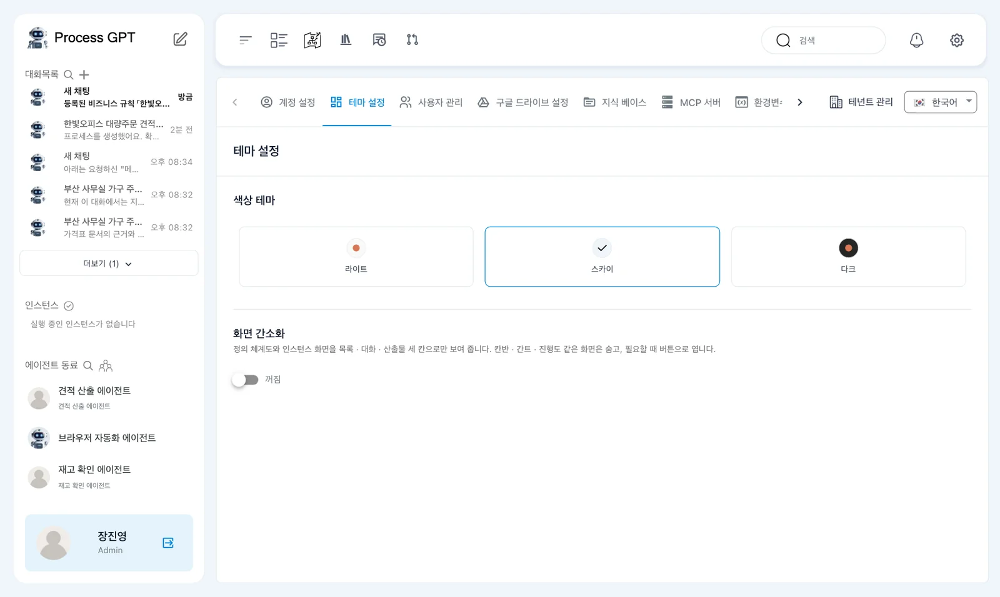
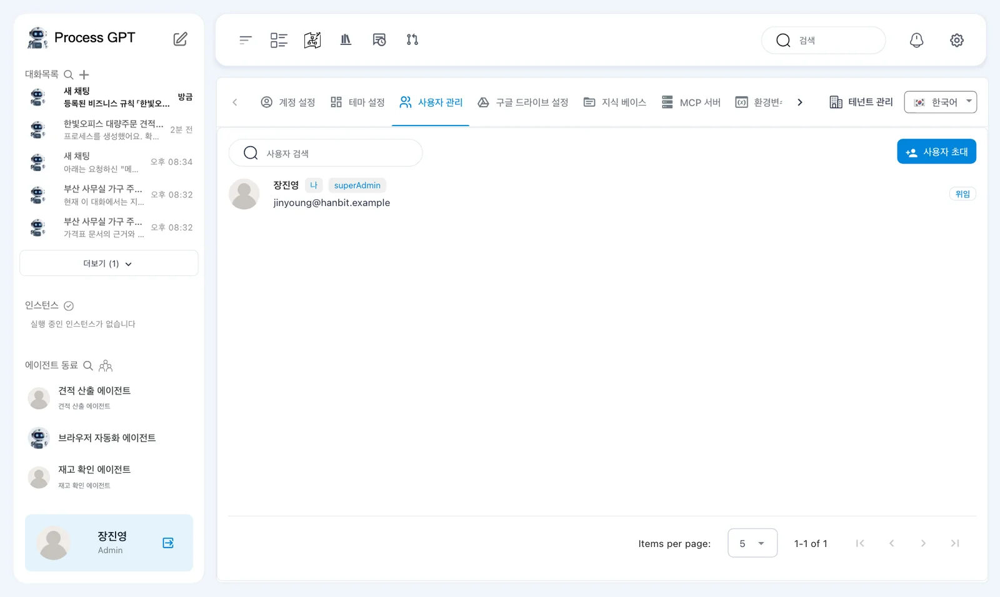
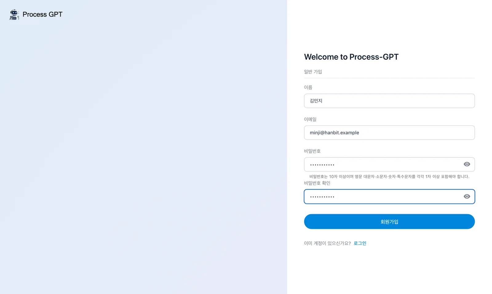
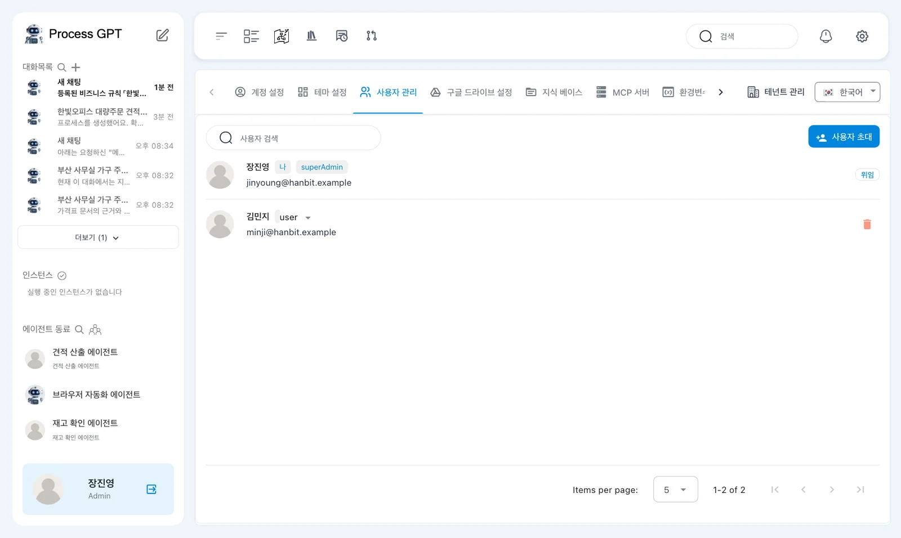
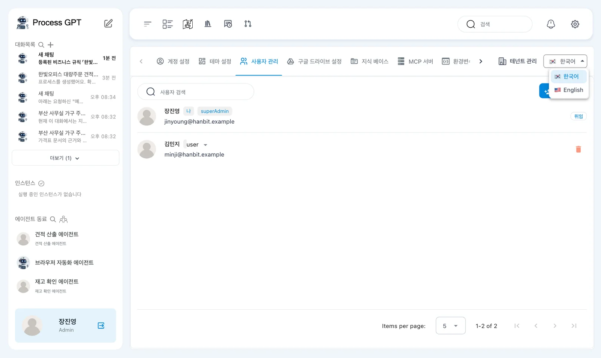
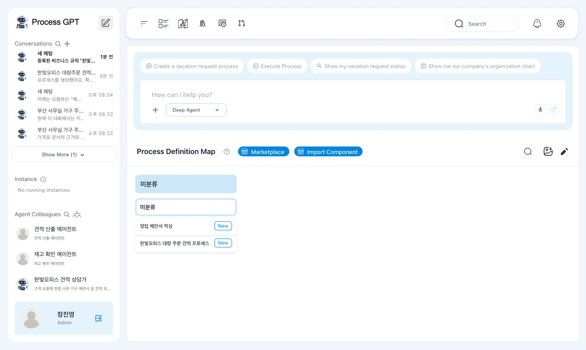

위쪽 막대의 ⚙ 설정에서 내 계정과 테마를 바꾸고, 영업 담당 김민지를 이 회사의 사용자로 들입니다. 화면 언어를 영어로 바꿨다가 되돌려 보고, 지식 베이스 탭과 14장(준비 중)에서 쓸 MCP 서버·환경변수 탭이 어디 있는지 확인합니다.
설정 화면#
위쪽 막대 오른쪽 끝의 ⚙을 누르면 설정이 열립니다. 위에 탭이 한 줄로 있고, 줄 끝에 화면 언어(「🇰🇷 한국어」)가 있습니다.
| 탭 | 하는 일 | 이 튜토리얼 |
|---|---|---|
| 계정 설정 | 이름·이메일·프로필 사진, 2단계 인증(OTP) | 이 장 |
| 테마 설정 | 색상 테마(라이트·스카이·다크), 화면 간소화 | 이 장 |
| 사용자 관리 | 같은 회사 사람 목록과 역할 | 이 장 |
| 지식 베이스 | 위쪽 막대의 지식 베이스와 같은 화면 | 8장 |
| MCP 서버 · 환경변수 | 에이전트에게 붙일 도구 서버와 그 비밀값 | 14장(준비 중) |
| 구글 드라이브 설정 · Git 설정 · 데이터소스 · 코드 편집 · 용어집 관리 · 카탈로그 · 조직 그룹 · 테넌트 관리 | 바깥 저장소·데이터 연동과 관리 기능 | 쓰지 않음 |

따라 하기 1 — 계정과 테마#
- 「계정 설정」에서 이름과 프로필 사진을 바꿀 수 있습니다. 바꾸면 「저장」을 누릅니다.
- 「2단계 인증 (OTP)」의 「2단계 인증 사용」을 켜면 로그인할 때마다 인증 앱의 6자리 코드를 한 번 더 넣습니다. 실습에서는 켜지 않습니다.
- 「테마 설정」에서 색상 테마를 골라 봅니다. 「화면 간소화」를 켜면 정의 체계도와 인스턴스 화면이 목록 · 대화 · 산출물 세 칸으로만 보입니다.

따라 하기 2 — 동료 들이기#
「사용자 관리」에는 지금 나(장진영, superAdmin) 한 사람만 있습니다. 「사용자 초대」는 초대 메일을 보내는 기능인데, 로컬 설치본은 메일을 보내지 않습니다. 로컬에서는 동료가 같은 주소에서 직접 가입하면 이 회사의 사용자로 들어옵니다.

- 다른 브라우저(또는 시크릿 창)로 http://localhost:8088 을 열고 「사용해 보기」 › 「계정 생성」으로 영업 담당 김민지(
minji@hanbit.example)를 가입시킵니다(1장과 같습니다). - “회원가입에 성공했습니다”와 함께 김민지로 바로 로그인되어 프로세스 체계도가 열립니다.
- 장진영 쪽 「사용자 관리」를 새로고침하면 김민지(
user)가 목록에 들어와 있습니다.


처음 가입한 사람만 관리자
로컬 설치본은 회사 하나(테넌트 localhost)만 둡니다. 처음 가입한 사람이 관리자(superAdmin), 그 뒤에 가입한 사람은 일반 사용자(user)로 바로 들어옵니다.
따라 하기 3 — 화면 언어 바꾸기#
- 탭 줄 끝의 「🇰🇷 한국어」를 누르고 🇺🇸 English를 고릅니다. 탭 이름이 Account Settings, Appearance, Manage Users …로 바뀝니다.
- 홈으로 가 보면 사이드바(Conversations, Agent Colleagues)와 채팅 상자(「How can I help you?」, Deep Agent)도 영어입니다. 내가 만든 프로세스·에이전트 이름은 그대로입니다.
- 다시 설정의 「English」를 눌러 한국어로 되돌립니다.


다음 장으로#
여기까지가 이번에 공개한 장입니다. 「준비 중」으로 표시된 장(조직도와 역할 담당자, 실행하고 할 일 처리하기, 승인과 반려 등)은 현재 버전에서 고치는 부분이 반영되면 차례로 공개합니다. 한눈에 보는 정리는 부록에 있습니다.
확인 문제
- 로컬 설치본에서 동료를 이 회사의 사용자로 들이려면 어떻게 하나요?
- 두 번째로 가입한 김민지는 관리자인가요?
- 화면을 영어로 바꾼 뒤 한국어로 되돌리려면 어디를 누르나요?
답
- 같은 주소(http://localhost:8088)에서 「계정 생성」으로 직접 가입하게 합니다. 로컬 설치본은 초대 메일을 보내지 않습니다.
- 아닙니다. 처음 가입한 장진영만 관리자이고, 김민지는 일반 사용자로 들어옵니다.
- ⚙ 설정의 탭 줄 끝 「English」를 누르고 「한국어」를 고릅니다.